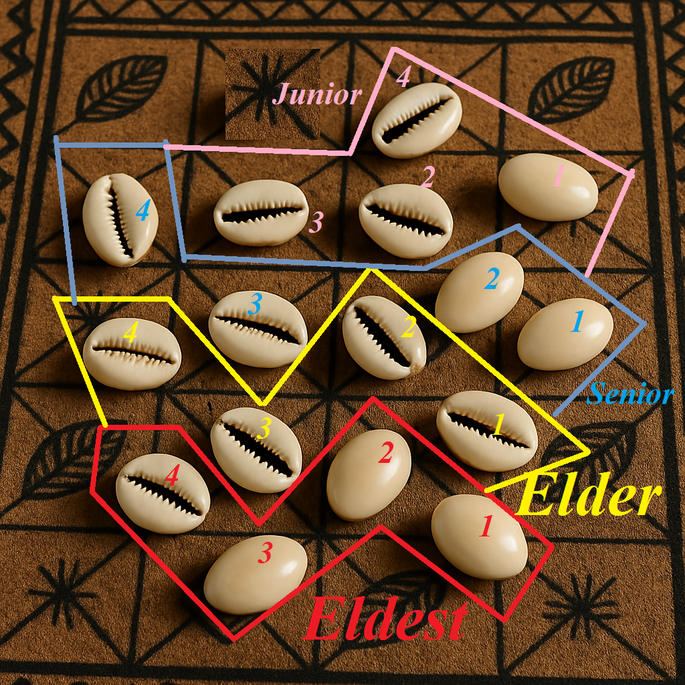

Eldest
The closest four elements establish the primary Odu of the cast.
This teaching page displays the 20-4 cowrie cast structure using the hierarchy of Eldest, Elder, Senior, and Junior. The cast is read from the closest four elements to the furthest four elements.
Image file used below: EldestCowrie2.png

The closest four elements establish the primary Odu of the cast.
The next levels determine whether the Eldest is respected or challenged.
When Eldership is respected, Ibi may be transformed into Ire.